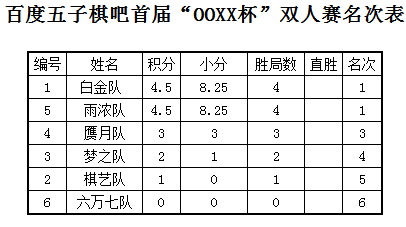
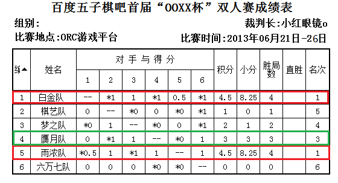

百度五子棋吧首届“OOXX杯”双人赛最终成绩表
#1 百度五子棋吧首届“OOXX杯”双人赛最终成绩表 作者：小红眼镜 发表时间：2013-6-27 15:08:37
6月26日晚，首届OOXX杯双人赛的最后一盘对局终于结束。
而冠军和倒数第一的归属也才敲定。
最终，白金队（黑白与nil）和雨浓队（新雨与浓睡）在相互的对局中，战成平手，加上双方与其他各队之间的战绩完全一样，并列第一。
第三名为清华学子wind和快棋小王子超微羊刀组成的赝月队。
其余各队成绩如下表。


本次比赛是第一次尝试双人赛形式，虽然之前就已经预料到ORC平台的不稳定性会为比赛的顺利进行带来一些阻碍，
但ORC近期的各种大姨妈还是令大家有点儿吃不消，也让本来可以三天结束的比赛，拖到昨日才终于完成。
很高兴的是，在比赛中，由于各种主客观的因素多多少少影响了比赛的正常进行，但对局的双方都能够互相包容和谅解，使得比赛得以最终圆满结束。
在此，对各位参赛选手表示衷心的感谢！感谢你们的包容和谅解！感谢你们为大家奉献的精彩棋局！
［此帖子已被 小红眼镜 在 2013-6-27 15:21:25 编辑过］
［ 五子棋黑白无常 于 2013-6-27 15:38:37 时花20金币送鲜花一朵］
［ 五子棋黑白无常 于 2013-6-27 15:38:37 时花20金币送鲜花一朵］
［ 五子棋黑白无常 于 2013-6-27 15:38:37 时花20金币送鲜花一朵］
［ 五子棋黑白无常 于 2013-6-27 15:38:37 时花20金币送鲜花一朵］
［ 五子棋黑白无常 于 2013-6-27 15:38:37 时花20金币送鲜花一朵］
［ 釣鱼岛岛主 于 2013-6-27 16:07:57 时花20金币送鲜花一朵］
［ 釣鱼岛岛主 于 2013-6-27 16:07:57 时花20金币送鲜花一朵］
［ 釣鱼岛岛主 于 2013-6-27 16:07:57 时花20金币送鲜花一朵］
［ 雄鹰王 于 2013-6-27 17:26:42 时花20金币送鲜花一朵］
#2 Re:百度五子棋吧首届“OOXX杯”双人赛最终成绩表 作者：一块金子 发表时间：2013-6-27 15:13:36
 并列第一很和谐
并列第一很和谐［ 小红眼镜 于 2013-6-27 15:22:16 时花20金币送鲜花一朵］
［ 小红眼镜 于 2013-6-27 15:22:16 时花20金币送鲜花一朵］
［ 小红眼镜 于 2013-6-27 15:22:16 时花20金币送鲜花一朵］